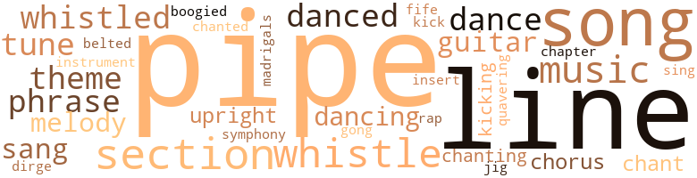
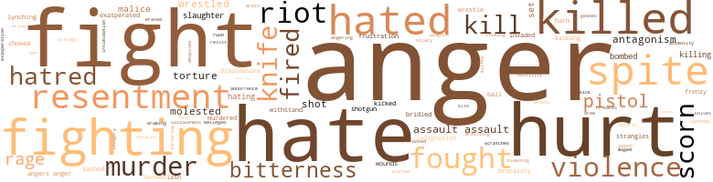

Alien Land, by Savoy, Willard (1949)
128 music-related terms matched in this text.
Most frequent terms in this topic: pipes (14); song (12); lines (7); whistle (7); section (7)
belt_out.v.01
Definition: sing loudly and forcefully
| word | sentence |
|---|---|
| belted | Kern settled one elbow against the bar and slowly un - belted his coat . |
boogie.v.01
Definition: dance to boogie music
| word | sentence |
|---|---|
| boogied | From behind doors on the far side of the lounge , there came the boogied strains of a prelude : Bach , he thought . |
chant.n.01
Definition: a repetitive song in which as many syllables as necessary are assigned to a single tone
| word | sentence |
|---|---|
| chant | He quickly began a slow moaning chant of a prayer and the congregation bent their heads and began to sway slowly from side to side in time to his words . |
chapter.n.01
Definition: a subdivision of a written work; usually numbered and titled
| word | sentence |
|---|---|
| Chapter | Chapter representatives and members at large . |
chorus.n.01
Definition: any utterance produced simultaneously by a group
| word | sentence |
|---|---|
| chorus | A great contralto stood poised on the dying thunder of applause and when the scraping feet of the rising throng had stilled , her voice rose in the words of America , and after a chorus the voice of the stadium joined hers and shared the sky with the first parad - ing clouds of evening . |
| chorus | mmmmmmmmm mmmmmmrnmmm urn Ah mmmmmmm mmmmmmmmm failin ' inter thuh bloody sea Ai n't no mo ' foes to fight . . . mmmmmmrnmmm Ah uh mmmmmmmm this is a mmmrnmmmrn mmmmmmmm Ah uh mighty fine worl ' mmmmmmmmm mmmmmmrnmmm A mighty fine worl ' mmmmmmmmmmmm mmmmmmmmm Thank you , Gawd mmmmmmrnmmm mmmmmmmm this is a mighty fine worl ' mmmmmmmm mmmmmm oh ah to be friendly with a man like Gawd mmmmmmmm mmmmmmmmm The chanting chorus ended and the leader raised his hands and bowed his head . |
dance.n.01
Definition: an artistic form of nonverbal communication
| word | sentence |
|---|---|
| dances | It took the place of dances and parties and filled his idle days . |
| dance | " I says if 'n we goin ' to that dance tonight - make up yo min ' . |
| dances | They had been filled with square dances , tobogganing and skating , and a trip to Millfield for a husking bee . |
| dance | This had begun then - with an introduction at a college dance , with casual words that had run like quicksilver into a pattern from which there had been no escape . |
dance.v.03
Definition: skip, leap, or move up and down or sideways
| word | sentence |
|---|---|
| danced | The white blossoms and orange - red seed berries of second-flowering hawthorn danced together in the wind . |
| danced | He set his eyes on the feet in front of him and moved toward them , swinging blindly as " Blondie " straightened and danced toward him , fists poised . |
| dancing | " You 'll ' scuse me , ma'am , but I reckon you did n't know you were dancing with - " Hypnotized , Kern watched the word shape on Fannin 's mouth , formed it silently himself , knowing what it would be like , knowing the shape it demanded of the lips . |
| dancing | " You were dancing with a nigger . " |
| dancing | " - You 're dancing with a nigger ! " |
| danced | She had even danced with Charles - dated him ! |
| danced | " You would n't believe it , Kern , but he chose me for a reel and almost danced my legs off . " |
dirge.n.01
Definition: a song or hymn of mourning composed or performed as a memorial to a dead person
| word | sentence |
|---|---|
| dirge | Jerry 's voice was like a dirge . |
fife.n.01
Definition: a small high-pitched flute similar to a piccolo; has a shrill tone and is used chiefly to accompany drums in a marching band
| word | sentence |
|---|---|
| fife | Nettie ca n't , and would n't , if she could , understand the interests he is using to fill up the most important spaces in his fife . |
gong.n.01
Definition: a percussion instrument consisting of a metal plate that is struck with a softheaded drumstick
| word | sentence |
|---|---|
| gong | Like the sound of a gong breaking on its peak , numbing his eardrums . |
guitar.n.01
Definition: a stringed instrument usually having six strings; played by strumming or plucking
| word | sentence |
|---|---|
| guitar | Party noises had filled his ears and the room around him - laughter , a guitar , singing , ice in glasses , the drum of rain on the skylight - and the question had filled his mind . |
| guitar | Standing , the guitar in his hand looked like a toy . |
| guitar | They looked toward where he half stood , half leaned against a table , his eyes watching his fingers as he tuned the guitar . |
insert.n.01
Definition: a folded section placed between the leaves of another publication
| word | sentence |
|---|---|
| insert | Now and then a news insert , such as the statement made by a District Commissioner deploring this " injury to the fair name of the Nation 's Capital , " would earn a contemptuous snort . |
jig.n.01
Definition: music in three-four time for dancing a jig
| word | sentence |
|---|---|
| jig | " You sure outgrowed that horse in jig time . |
kick.v.04
Definition: kick a leg up
| word | sentence |
|---|---|
| kick | He was about to kick her when her son flew to her de - fense . |
| kicking | One man behind Kern , in a shiny black suit , fell from his seat and rolled rapturously on the ground , kicking at the ground with his heels . |
| kicking | Crying , Kern fell on the broad , blue-shirted back , kicking , pounding , biting , the saltiness of sweat in his mouth and in his nostrils . |
madrigal.n.01
Definition: an unaccompanied partsong for 2 or 3 voices; follows a strict poetic form
| word | sentence |
|---|---|
| madrigals | With half an ear he listened to her complaint and at the same time heard plainly the group of older boys who leaned against the picket fence and teased the girls who switched back and forth without their parents , grinning delightedly at the madrigals which greeted them . |
music.n.01
Definition: an artistic form of auditory communication incorporating instrumental or vocal tones in a structured and continuous manner
| word | sentence |
|---|---|
| music | The rich voice rumbled up like music . |
| music | Coons just have more music in them . " |
| music | Later , as they sat in the living room and listened to the radio , they relaxed and were very careful not to break the calmness which music had brought them . |
| music | The music ended . |
| music | The music stopped in mid-phrase , startling them . |
| music | In the back - ground , low music and the sound of a song just ending . |
musical_instrument.n.01
Definition: any of various devices or contrivances that can be used to produce musical tones or sounds
| word | sentence |
|---|---|
| instrument | That voice , the instrument on which his father had for years played with the skill of a virtuoso , had not been touched by the reedy tones of age . |
phrase.n.02
Definition: a short musical passage
| word | sentence |
|---|---|
| phrases | Words that belched forth in harsh phrases of hate . |
| phrases | His eyes focused on something beyond the center of the table and he began to talk in slow phrases , almost to himself . |
| phrase | Its rolling sound had scarcely died out before a dark heavy man with a smooth-shaven head leaped to the pulpit and began to chant a phrase which Kern could not under - stand . |
| phrases | Deliberately he slurred his speech , draw - ing on the remembered phrases of the natives , not forgetting the re - spectful " sir . " |
pipe.n.04
Definition: a tubular wind instrument
| word | sentence |
|---|---|
| pipe | It was a room filled with the scent of burning pine knots and the smell of pipe smoke , a man 's room , a room with a fireplace . |
| pipe | He heard the rhythmic creak of the rocker and saw , reflected on the glass above him , the fading and brightening glow of Mr. Henderson 's pipe . |
| pipe | He drew deeply on his pipe . |
| pipe | Then the breaks in their conversation became more frequent and more lengthy until , finally , they fell silent and Dr. Gray dozed with his pipe still held easily in his mouth . |
| pipe | When he came back , Dr. Gray was comfortably settled in his seat , eyes closed , drawing contentedly ' at the ever-present pipe that slanted from his mouth . |
| pipes | Across the top of the cell , five pipes , inches apart , made a rack a foot or two below the ceiling . |
| pipes | He stretched out on the bunk and stared at the ceiling , his eyes fol - lowing the pipes across the cell and coming back again . |
| pipes | He forced himself to look at the heavy bands that tied the pipes , like a rack , to the ceiling . |
| pipes | Kern swung out to the rack of pipes , praying as they sagged that they would hold his weight . |
| pipes | He inched backwards toward the center of the floor and watched as Tige raised himself to the top bunk and reached out to get a handhold on the pipes . |
| pipes | He leaned forward , holding tightly to the pipes , staring at the upturned face . |
| pipes | Kern crouched forward on the pipes all night , afraid for his very life . |
| pipe | Each pipe cut into his legs and straddling thighs like fire . |
| pipes | Cramped and stiff , he started to edge forward on the pipes . |
| pipes | He crouched against the pipes , panting with exertion , aching in every muscle , trying to muster up enough strength to creep forward again . |
| pipes | When he did , he would have to span the gap between bunk and pipes . |
| pipes | His arms gripped the pipes even more tightly . |
| pipes | Git down offen them pipes - git I say ! " |
| pipes | Kern felt hopeful , as he inched along the pipes . |
| pipes | The gap between the pipes and the edge of the top bunk was an agony of reaching and finally slipping , falling , grasping for a hand - hold , as he banged against the edges of the bunks and dropped to the floor . |
rap.n.05
Definition: genre of African-American music of the 1980s and 1990s in which rhyming lyrics are chanted to a musical accompaniment; several forms of rap have emerged
| word | sentence |
|---|---|
| rap | But this is a serious charge 'n you want to be sure the right man takes the rap . " |
section.n.01
Definition: a self-contained part of a larger composition (written or musical)
| word | sentence |
|---|---|
| section | The gathered reporters , press and wire services represented among them every section of the country . |
| section | They rolled slowly along the tree-lined road , past the beginning of a sidewalk and the first houses set back from the walk , on to the fringe of the business section , and turned into a wide street that split and joined again about an open square that lay lifeless and sun-baked under the eagle-eyed gaze of General Jeb Stuart . |
| section | When he wrote again from France , he had been assigned to the Judge Advocate General 's section . |
| section | When the peace officers started to batter the door down with a section of railroad tie without knocking to determine if the house was occupied , young Bush suddenly opened the door and volleyed shot after shot into the ranks of the housebreakers , killing three of them on the spot . |
| section | Their bodies were paraded through the Negro section of town before being thrown into the street where they lay for eight hours before Negro residents felt it safe to remove them . " |
| section | Originally , Valley View was built for young men and women who lived in this section of the South . |
| section | The sneering change of expression on the face of a formerly courteous shopgirl as Laura gave her home address - in a Negro section - had been her first lesson . |
sing.v.02
Definition: produce tones with the voice
| word | sentence |
|---|---|
| sang | His heart sang . |
| sang | Jeff sang ballad after ballad . |
| sang | It stayed in him , in time - and almost in tune - to their voices as they sang Auld Lang Syne . |
| sing | The tin cans passed among the benches as the choir started to sing " Rock of Ages - clef for me - " The congregation entered in almost at once , drowning out the choir . |
song.n.01
Definition: a short musical composition with words
| word | sentence |
|---|---|
| song | When the song was ended , when he spoke again , his regret was real . |
| song | In the back - ground , low music and the sound of a song just ending . |
| song | The song ended and they stood there , hands still clasped , caught by the magic their voices had made . |
| song | Again a song . |
| song | Sue 's hand , tightening on his at the end of a song . |
| song | The school bus chugged away , the words of a song trailing behind it . |
| song | The softness of the night , the edged shapes about him , the voices in song and the sweet scent that filled the air were different and intoxicating , and they drugged away part of his earlier fear . |
| songs | Kern drew pictures of faithful old retainers sending up songs about the " Big House " in the dusk . |
| song | He hummed another song . |
| song | He had known too that he would n't look up and that he would , in a moment , hum another song . |
| song | The throaty song went up loud and clear to the roof of the church . |
| song | The last thing was a song . |
| song | In one a Negro sprawled on the soft , high - piled cotton , one leg hooked over the sideboard , his voice clear in a song . |
symphony.n.01
Definition: a long and complex sonata for symphony orchestra
| word | sentence |
|---|---|
| symphony | The staccato voice of a news announcer replaced the quiet strains of symphony , and their tension came back to them as the man hurried through a brief of the day 's news . |
theme.n.03
Definition: (music) melodic subject of a musical composition
| word | sentence |
|---|---|
| themes | I have these themes listed - Gay Nineties , the Folie Bergère idea , the Barbary Coast , the Flapper theme , and Working My Way Through College - I think that 's all . |
| theme | I have these themes listed - Gay Nineties , the Folie Bergère idea , the Barbary Coast , the Flapper theme , and Working My Way Through College - I think that 's all . |
| theme | ' Those in favor of using the theme , ' Working My Way Through College ' - " Kern breathed deeply . |
| theme | " Generally , we are going to use the theme , ' A Doughboy in Eng - land . ' |
tone.v.01
Definition: utter monotonously and repetitively and rhythmically
| word | sentence |
|---|---|
| chant | Its rolling sound had scarcely died out before a dark heavy man with a smooth-shaven head leaped to the pulpit and began to chant a phrase which Kern could not under - stand . |
| chanted | The members of the church chanted in time with the leader , their voices rising and falling , now dirgelike , now swift and almost unrecognizable . |
| chanting | mmmmmmmmm mmmmmmrnmmm urn Ah mmmmmmm mmmmmmmmm failin ' inter thuh bloody sea Ai n't no mo ' foes to fight . . . mmmmmmrnmmm Ah uh mmmmmmmm this is a mmmrnmmmrn mmmmmmmm Ah uh mighty fine worl ' mmmmmmmmm mmmmmmrnmmm A mighty fine worl ' mmmmmmmmmmmm mmmmmmmmm Thank you , Gawd mmmmmmrnmmm mmmmmmmm this is a mighty fine worl ' mmmmmmmm mmmmmm oh ah to be friendly with a man like Gawd mmmmmmmm mmmmmmmmm The chanting chorus ended and the leader raised his hands and bowed his head . |
| chanting | Neither of them had joined in the chanting supplication . |
tune.n.01
Definition: a succession of notes forming a distinctive sequence
| word | sentence |
|---|---|
| line | " Your Honor , this line of examination is highly irregular . |
| line | We must again object to this line of questioning . " |
| lines | He could imagine the tiny frown lines that would come to her forehead if he tried to tell her . |
| lines | By mutual agreement they stood apart , queueing up in separate lines before separate doors . |
| lines | There were black men of my race and white men of yours in separate lines . |
| tune | In tune to the squishing sound of his feet on the sidewalks , the question had repeated itself again and again . |
| lines | Marianne stood before him , her eyes searching his face , puzzled frown lines on her forehead . |
| lines | Kern nodded his head and set his face in lines of regret that he hoped would match his father 's dark scowl . |
| Lines | Lines about the mouth . |
| Lines | Lines that might come from keeping the lips too tightly closed . |
| tune | It stayed in him , in time - and almost in tune - to their voices as they sang Auld Lang Syne . |
| melody | Swayed slow as the melody rose and filled the place . |
| line | Her eyes ran from line to fine , and as Kern watched she turned the page slowly . |
| tune | Kern looked obliquely at Jake as he started to hum a low tune . |
| melody | He tried to catch the melody and could not . |
| line | Underneath , lettered in a scrawling hand with the " N " made back - wards , was a penciled line : THESE BOTTLES HAVE TO BE USED AGAIN . |
| lines | Tiny lines edged her mouth , and a strained expression had crept into her eyes . |
| tune | I find I do n't like the tune well enough to pay the piper . " |
| lines | " Let 's read through these lines once and well call it a day . |
| melody | Then , as he had known he would , he heard Jake begin to hum a low melody . |
upright.n.02
Definition: a piano with a vertical sounding board
| word | sentence |
|---|---|
| upright | Kern sat upright at the window as voices and the sound of moving feet came from the living room . |
| upright | Kern twisted upright on his bunk . |
warble.v.01
Definition: sing or play with trills, alternating with the half note above or below
| word | sentence |
|---|---|
| quavering | High and quavering . |
whistle.v.01
Definition: make whistling sounds
| word | sentence |
|---|---|
| whistled | It had been a long time since he had opened that door with any pleasure , since he had whistled as he hung up his coat and rolled his shirt sleeves up . |
| whistled | It seemed to him now that he had n't whistled since the first week he 'd begun to work there . |
| whistle | Two men rushed from the Smoke Shop next door to whistle after them . |
| whistle | A shrill whistle from beyond the house and a clanging cowbell ended their conversation . |
| whistle | I never knew you had a temper - " The cool late April night wind came in at the window , bringing with it mixed sounds - a night bird 's calling notes , the thin sound of rustling branches , a mournful , far-off train whistle - sounds which Kern heard and was unconscious of . |
| whistled | The Comet slid out of the yards , and whistled its way past the radio towers to the south of the city , raced for a moment on equal terms with the cars along the Franklin Turnpike , then gathered speed for its long journey south to the Gulf and rushed away , leav - ing the cars , and finally the road , behind . |
| whistle | At grade crossings and hamlets , the train whistle split the silence with a distant shriek that broke over their car and quickly faded behind them . |
| whistle | Three whistle blasts split the night , and the chuff of the engine jerked the train couplings tight behind them as the train began to slide away . |
| whistle | Kern gave a low whistle of pleasure when he saw it . |
| whistled | The switch whistled as he cut savagely down . |
| whistle | He killed an urge to whistle . |
594 violence-related terms matched in this text.
Most frequent terms in this topic: anger (94); hate (47); fight (47); hurt (45); fighting (16)
abhorrence.n.01
Definition: hate coupled with disgust
| word | sentence |
|---|---|
| abhorrence | Their expres - sions of interest ran the gamut from a soberly determined abhorrence of crime to the enraged ravings of Negro haters . |
abrasion.n.01
Definition: an abraded area where the skin is torn or worn off
| word | sentence |
|---|---|
| scratches | Dull marks and old scratches on the tabletop before him were deep buried under polish , rubbed and shined until the marks of use and care had blended into one . |
aggravation.n.01
Definition: an exasperated feeling of annoyance
| word | sentence |
|---|---|
| exasperation | She stamped her foot in mock exasperation . |
anger.n.01
Definition: a strong emotion; a feeling that is oriented toward some real or supposed grievance
| word | sentence |
|---|---|
| angers | You 've overcome the handicap you had at the start , the angers and fears you felt . |
| anger | He remembered fear and the need for anger , for hatred , swelling in him , crowding out everything else . |
| anger | Side by side with Paula and Jake were " Tige , " Sheriff Bill Noble and Tom Meeker , reminding him of blind anger and godless cruelty . |
| Anger | Anger was plain in him and in the abrupt nod with which he accepted Charles ' " Good morning , sir . " |
| anger | Across the table , Caleb Adams ' face blazed with anger . |
| anger | " Charles , you know that I have never held any personal anger . |
| anger | The undercurrent of anger in their voices reached him . |
| anger | He had been about to go to bed that night when the hallway door had opened and his father stood there , his face pale with anger . |
| anger | Puzzled with anger and sadness , not understanding , Kern undressed in his dark room and went to bed . |
| anger | First anger grew during those years . |
| anger | First anger that never en - tirely died out , that had as its target the Freedom League , the organization that held so much of hope for an entire race . |
| anger | Charles stood , half turned , with anger shaking him . |
| anger | The white press won his bitter though most often silent condemnation for the irresponsible fashion in which it stirred up this storm of anger . |
| anger | Until there was an anger in him that would forever deny the tide of sympathy that came with remembering . |
| anger | Deliberately he snapped out the name , omitting the " Mister , " smiling as he watched the flood of anger that came over the man . |
| anger | He wrought to anger , deliberately and savagely . |
| anger | Surprised men and women looked for a moment at this part of themselves and for a moment knew shame , then felt the wave of anger that came striding out , a bulwark emotion , determined to justify the exposed prejudice . |
| anger | There was no anger in his face . |
| anger | From the most conservative pulpits , have been delivered sermons , special pleas , for heavenly anger to be delivered upon the heads of those not on trial - innocent Negroes . |
| anger | Evarts ' voice was taut-charged with anger out of the three weeks ' delay . |
| anger | When this happened , eleven jurymen shifted in their chairs , feeling a protective urge and first dull anger that a white woman should sit before them , afraid because of a Negro 's glare . |
| anger | Their measured , deliberate cadence smashing hate and anger into fragments of shame and an instant of sick regret . |
| anger | No anger now . |
| anger | And muzzled his growing anger at Dan Croom . |
| anger | Twice he 'd almost lost control of himself and given way to the goad of anger . |
| anger | His ears rang and tears of anger came to his eyes . |
| anger | He heard his name again and noted an edge of anger in the voice . |
| anger | He tried to warn himself against the anger that rose in him . |
| anger | When it was complete and violent it went in anger through his eyes to hers . |
| anger | He did not feel anger . |
| anger | Neither pity nor anger nor love . |
| anger | To " the problem " the men brought the language of personal experience - throaty words of anger , of hope , and despair that rose to match and describe the form of the thing that stirred inside . |
| anger | He had learned anger at Negroes to erect a barrier between them and himself - to mark himself as anti-Negro . |
| anger | He 'd learned to say " nigger " - and , almost , he had learned to hear it said without anger . |
| anger | He felt that and was sick with anger and shame . |
| Anger | Anger . |
| anger | Kern pounded at the familiar face until he was out of breath and half blinded by tears of anger . |
| Anger | Anger at himself for having come filled him . |
| anger | And with it fear - and anger at the Negro man for having been there . |
| Anger | Anger . |
| anger | A word that was madness - that went brutally to the quick core of the soul and tore and rended with hopelessness and anger , shame and despair . |
| anger | The man 's lip curled and Kern felt the anger that was already in him swerve to this ready target . |
| anger | The man 's eyes widened at the blunt words and Kern felt a grim satisfaction at having broken through his anger . |
| anger | Faces dull with hopelessness and twisted with an inner , as yet unrecognized , anger . |
| anger | He was - the barrier he had taught himself , of scorn and anger at Negroes sprang to involuntary life - he was a Negro . |
| anger | He answered Marianne , his voice low and grating with anger and self-scorn and despair . |
| anger | Kern felt his own anger rise . |
| anger | For the first time he could remember , Kern heard a Negro talk about " the problem " without desperate hopelessness and a voice of anger . |
| Anger | Anger flared in his father . |
| anger | The bluntness of his statement and the deep anger in his voice surprised Paula . |
| angers | Other things began to fall in place in her mind , pointing the answer to Kern 's reticence and his angers . |
| anger | Even in the face of his father 's certain anger , Kern remembered the night he had seen Hamlet with a magic thrill . |
| anger | Arms akimbo , Nettie stood before him , her anger yielding to curiosity as she eyed the letter . |
| anger | He saw her anger with glee and carefully opened the envelope . |
| anger | The flood of anger that always came with the thought of obedi - ence to Nettie filled Kern . |
| anger | Why did he have to stay in Washington and grow up in his father 's footsteps - in the footsteps of all the other Freedom Leaguers - and become a " professional hater , " always fighting , eat - ing his heart out with anger and despair and hate when he wanted to write stories ? |
| anger | For Nettie too , Kern 's anger became hot and deep . |
| angers | During that summer , the Sum - mer Theater sobered his angers and gradually relaxed the tensions that writhed in him until , by late July , Kern was almost his old self again . |
| anger | The long-fed anger seethed in Kern . |
| anger | An anger of long years , of school and home , of bitterness and resentment grown from a thousand trifles , surged up in him . |
| Anger | Anger which was not a cause but a result . |
| anger | But a man - with a man 's anger and his face twisted in a way Kern had seen once before . |
| anger | He knew that this was anger and danger . |
| anger | Then anger flooded out of him and Kern stood and shook . |
| anger | " Leastaways , she says it was like this fo ' Gen ' l Sherman dirtied it up - " Fannin 's words were gritted out on a rising anger . |
| anger | Kern felt a warm gratitude at Chub 's earnest words , and quick anger at Fannin 's derisive laugh . |
| anger | Kern felt the anger in him shaping to words . |
| anger | One day would end fear and shame and anger . |
| anger | Do you understand now the violence and the hatred , the dull anger in the voices you 've known ? |
| anger | The first words he had shut out - he had mustered up enough anger , told himself harshly enough that a " white man " was talking to him , to have shut out the first words . |
| anger | The tension and the anger in him had waned in spite of his determination and he listened to the old man . |
| anger | Fannin 's name brought boiling anger to Kern . |
| angers | As he did so , remembered angers and suspicions came to new and eager life . |
| anger | That what had made her flare with anger that night he had called Jeff Balanchine a " coon " would come pushing through now . |
| anger | Whenever he ex - pressed his views in this respect , his words were charged with hot anger and his speech itself was pungently flavored with vicious profanity . |
| anger | Know - ing as he did - thanks to a long letter he received from Mr. Hender - son the day after Kern returned home - the conditions under which Kern had left Evans , and knowing the intensity with which the boy wanted to write , he realized , as Kern did not , the substitute part that this anger at whites and this sudden " devotion " to " the prob - lem " played . |
| anger | In the very violence of Kern 's anger , Charles saw the full meas - ure of his hurt . |
| anger | Kern 's anger flared less brightly as the summer wore on . |
| anger | His anger at shiftless , irresponsible Negroes who , by their very actions and bearing , served to give continued life to the symbolic Negro about whom so much of the myth of prejudice revolved was equaled only by his anger at the white man . |
| anger | His anger at shiftless , irresponsible Negroes who , by their very actions and bearing , served to give continued life to the symbolic Negro about whom so much of the myth of prejudice revolved was equaled only by his anger at the white man . |
| Anger | Anger blossomed in him at the thing which forced him to this act . |
| anger | He looked with a new and a fierce anger at the force which had driven him to flight from the Negro race and realized , dispassionately , that he would never have run , had it not been for the " thing " - for the fearful , in-pressing , bruising tensions of life as a Negro . |
| Anger | Anger at the final act of cruelty which had brought him to this moment . |
| anger | Instead , for a white face , disinterest , laughter , or a blinding flash of anger . |
| anger | He did not know Kern would say yes because he was torn by a complicated mixture of anger and hurt and perverse defiance . |
| anger | Writhing anger at this final act which had , before his very eyes , twisted two kind and gentle people into inhuman shapes which he had not been able to recognize . |
| Anger | Anger . |
| anger | All summer he had gathered resolve , defiance , anger , trying to set himself for this trip . |
| anger | Evans was salt in his mouth , a dream he knew he 'd best forget , and he had tried to deepen his anger against the white man . |
| anger | Kern felt quick anger at hearing this man talk about Paula . |
| anger | There was anger at whites , contempt and hate for men like Tom Meeker . |
| anger | " Charles Roberts , fearless leader of the militant Freedom League , when reached in Kansas City , Kansas , where he was appearing in a speaking engagement , stated that the League would throw every ounce of its resources into a fight to protect the ten Negroes now being held in Redmon on charges of first-degree murder " Kern could imagine his father 's cold anger , remembering nights when a wire or a jangling phone had brought messages which he realized now must have been like this . |
| anger | His hatred now matched the remembered image of his father 's anger . |
| anger | A low mutter of anger grew into a rumble of angry sound and filled the chapel . |
| anger | When he spoke , anger had replaced his usual calm . |
| anger | Mutters of anger could still be heard in the chapel . |
| Anger | Anger started in him . ' |
| anger | His anger deepened . |
| anger | Pushing her flaming red hair angrily back from her ears , green eyes flashing , her full figure tense with excitement and anger , she seemed older and more mature than her listeners - as mature as she actually was . |
| anger | He could see his father 's face and savage anger was in it . |
| anger | And Kern , trembling with his own anger , felt the shaking world . |
| anger | For days afterward the house would be tense with his anger . |
| anger | Again he cried as helpless anger ran through him . |
| anger | He low - ered his eyes , afraid that his anger would show on his face . |
| anger | He was surprised that he could feel anger . |
| anger | His father would only heap coals on the anger of these men . |
| anger | Not anger . |
| Anger | Anger would flare for a short while , would be voiced in angry threats . |
| anger | To run from the completely familiar , to a way of life for whose members he had learned only fear and anger and hate . |
anger.v.02
Definition: become angry
| word | sentence |
|---|---|
| angers | Each day , as tempers wore thin and angers flared , the stark drama of the case became more clear . |
| angers | Except that one lived instead with the stifling , frighten - ing angers the word had wrought . |
| angers | To these was added newly remembered suspicions and angers that had been in him since he had started to write his story . |
| angered | These things knotted in him and angered him as they stopped near a small group of men at the hall door . |
| angering | Too much lay in the balance of the next few minutes to risk angering his father . |
| angers | With little or no coaxing , his mind refused to even consider the unpleasantness of the past and the angers the story had begun to rouse in him . |
animosity.n.01
Definition: a feeling of ill will arousing active hostility
| word | sentence |
|---|---|
| animosity | Stayed , and faced the deathless animosity , the involuntary suspicion which the mere presence of their faces aroused in many of the Negroes about them . |
attack.v.01
Definition: launch an attack or assault on; begin hostilities or start warfare with
| word | sentence |
|---|---|
| assails | Nothing else assails with such brutal directness - assails and questions and denies - the ultimate worth of men on earth in the handful of years they shall know in the long light-years in which space and a cosmos shall be . |
bang.n.04
Definition: the swift release of a store of affective force
| word | sentence |
|---|---|
| rush | He could not turn his eyes and a hor - rible understanding halted his headlong rush . |
besiege.v.01
Definition: surround so as to force to give up
| word | sentence |
|---|---|
| besieged | Not important , the flood of phone calls and visitors , Con - gressional and judicial , that week end long , from Friday to Monday , besieged Judge Gowdy 's Wisconsin Avenue home . |
bleeding.n.01
Definition: the flow of blood from a ruptured blood vessel
| word | sentence |
|---|---|
| bleeding | Naked , pride whipped and bleeding . |
bombard.v.02
Definition: throw bombs at or attack with bombs
| word | sentence |
|---|---|
| bombed | Woman leaps to death - sixth story of - England bombed again by buzz bombs . " |
| bombed | The Japanese have just bombed Pearl Harbor ! |
| bombed | I repeat - the Japanese have just bombed Pearl Harbor ! |
box.v.03
Definition: engage in a boxing match
| word | sentence |
|---|---|
| boxed | Charles folded his uniform and boxed it , and confided to Laura , a heresy among New Englanders , that he would " never wear one of those again . " |
bridle.v.01
Definition: anger or take offense
| word | sentence |
|---|---|
| bridled | He had seen and talked to a white face and the lessons of eight years had bridled his tongue . |
| bridled | Tom Meeker bridled . |
bullying.n.01
Definition: the act of intimidating a weaker person to make them do something
| word | sentence |
|---|---|
| intimidation | This buffoonery , this comedy , this eternal nagging and intimidation . |
contemn.v.01
Definition: look down on with disdain
| word | sentence |
|---|---|
| scorn | Until it was hard with scorn and hot with contempt . |
| scorn | He was - the barrier he had taught himself , of scorn and anger at Negroes sprang to involuntary life - he was a Negro . |
| scorn | But try to bludgeon it with silence and scorn and you will only make it more determined to live . |
| scorn | He could not chance explaining his reasons and seeing scorn and shame in her eyes . |
| scorned | Something that is - and yet which is not and because it is , makes me of another , a scorned , people . |
| scorn | He remembered the times he had seen disgust and disappointment show in her eyes and her rigid shoulders , in her tight fists - when scorn had filled her voice , as it had the night when he first met her and she heard him call Jeff Balanchine a " coon . " |
| scorn | Kern could not risk seeing her face fill with scorn and possibly shame - as though she had been dirtied - with sick wondering how this could have happened to her . |
| despised | He despised himself for the unfairness of it . |
| scorn | They were wide and filled with unconcealed scorn . |
| scorn | His scorn was leveled with equal impartiality upon the " po ' white trash , " the average white man in the streets , the wealthy and the gentry on Capitol Hill who , as he put it , made " democracy " a damned joke . |
| scorn | Jake 's scorn was obvious . |
| scorn | Kern could see his father speaking with cold contempt that held its target up to scorn . |
craze.n.02
Definition: state of violent mental agitation
| word | sentence |
|---|---|
| frenzy | Each witness he cross-examined with infinite patience , searching for little discrepancies , for the uncertainties that would create a reasonable shadow of doubt in their stories - for something that would reveal the testimony of one or the other to have been dic - tated by the racial frenzy which held the city in its grasp . |
| frenzy | Each day after that was filled with a driving frenzy of work from early in the morning until late at night . |
cut.n.05
Definition: a wound made by cutting
| word | sentence |
|---|---|
| gashes | The rolling , green hills gave way to a broken , rutted land on the face of which long , ragged , narrowing gashes showing red earth , ran upward and out of sight into the hillsides . |
defy.v.01
Definition: resist or confront with resistance
| word | sentence |
|---|---|
| withstand | Having attained the proportions of folklore in our times , it will nevertheless not withstand the scrutiny of reason . |
| withstand | Nothing in her experience had toughened her to withstand the impact she would feel if it touched her as a person . |
displeasure.n.01
Definition: the feeling of being displeased or annoyed or dissatisfied with someone or something
| word | sentence |
|---|---|
| displeasure | The last spectators filed out , grumbling their displeasure as the guards closed the wide double doors on their heels . |
| displeasure | It seemed to Kern that everything he did won his father 's disfavor - just as he knew that this would win his displeasure . |
draw.v.23
Definition: pull (a person) apart with four horses tied to his extremities, so as to execute him
| word | sentence |
|---|---|
| drew | The city editor of the Press drew up a quick outline of a story designed to discredit him , " slugged " it " Negro shyster " and put three men to work on it . |
| Drawing | In a small , cluttered room at the end of the hall , he motioned Kern to a chair beside a disarranged desk Drawing up another chair , he sat down , scratching his head . |
engage.v.07
Definition: carry on (wars, battles, or campaigns)
| word | sentence |
|---|---|
| waged | An incurious crowd , they went their various ways , unaware of the passionate vendetta of words being waged behind the fly - specked window and the half-drawn blind of the Tuxedo Tonsorial Parlor . |
erase.v.01
Definition: remove from memory or existence
| word | sentence |
|---|---|
| erased | What he knew of English and history erased the lines of doubt which had come to her face as he had stumbled in arithmetic , and Kern had felt a quick pleasure when he was complimented for the simple connec - tions he made between these two subjects . |
| erase | Only vigor - ous action , " the Judge continued , " can erase this stain . " |
ferociousness.n.01
Definition: the trait of extreme cruelty
| word | sentence |
|---|---|
| brutality | She spoke gently , chose her words with care , trying to spare them what she could of brutality . |
| viciousness | You will meet it , this viciousness , in one way or another , as long as you live in America . |
| brutality | He had escaped the tearing brutality that he knew now was real and not just angry , distorted words on the lips of Negroes . |
fight.n.02
Definition: the act of fighting; any contest or struggle
| word | sentence |
|---|---|
| fighting | So much fighting . |
| fighting | " Oh , Charles , why ca n't you give up this fighting , this hating ? |
| fighting | I am tired and sick of angry fighting voices . |
fight.n.05
Definition: a boxing or wrestling match
| word | sentence |
|---|---|
| fight | Had he been one with that tiny band of men - the Whites and Washingtons , DuBois and Wilkins and Douglass - men who gave their whole lives to the fight for a race . |
| fight | Once Negro editors recognized the familiar fight against a " white supremacy , " they were on familiar ground and lashed out in defense of the Negro citizens in Washington , fighting to pre - serve the few shreds of personal dignity which they were accorded . |
| fight | There was grim drama in the fight which Andrew Turpeau waged . |
| fight | The fight was lost . |
| fight | They knew , as did all of Washington , that the Freedom League had lost its fight . |
| fight | The fight for a principle was lost . |
| fight | The fight for Jeff Mason 's life went on . |
| fight | For he did fight . |
| fight | Kern stumbled under the sudden onslaught and felt his stomach crawl as it always did in a fight . |
| fight | Seemed as if Rollie was always on the spot , whenever he got in a fight . |
| fight | Tomorrow she 'd know about the fight and take him to task in front of the class . |
| fight | Every fight he had been in she had learned about , even those he 'd had when he was in the Fourth Grade with Miss Parker . |
| fights | Slighting references to the Jeff Mason trial ; rebukes for fights he had not started . |
| fights | He was always in fights . |
| fight | Just like a fight at school . |
| fight | " What is it - a fight ? " |
| fight | A school - boy fight . |
| fight | Teasing jibes were leading them to a fight . |
| fight | But the boys had made the fight . |
| fight | He could not understand why Rollie seemed to want the fight . |
| fight | They rolled back and forth on the ground , the boys shifting about them , careful not to raise a fuss that would bring the janitor out to break up the fight . |
| fight | His teacher called his father about the fight , but neither of them mentioned the affair to him . |
| fight | You will either have to go at this game of living as your father has , and fight segregation and discrimination and against the Negro at every turn , give your whole life to that , or - you can be yourself . " |
| fights | " And th ' other fights off there in the middle come from The Gut . " |
| fights | Beyond the fights of Millville they drove in silence , and the road was a shiny strip under the bright moonlight . |
| fight | Crinkly brown hair rimmed her fight brown face in tight rings . |
| fight | " I just ca n't listen to talk about fight - ing ' the problem ' and the League without feeling like this . |
| fight | Like I 'm getting ready to get in a fight . |
| fight | " Charles Roberts , fearless leader of the militant Freedom League , when reached in Kansas City , Kansas , where he was appearing in a speaking engagement , stated that the League would throw every ounce of its resources into a fight to protect the ten Negroes now being held in Redmon on charges of first-degree murder " Kern could imagine his father 's cold anger , remembering nights when a wire or a jangling phone had brought messages which he realized now must have been like this . |
| fight | No quarter can be given in this fight . |
| fight | Instead of comfort and understand - ing , he gave her the Freedom League - and a daily consciousness of its fight to protect Negroes against prejudice and discrimination . |
| fight | Laura could and did understand the need for the fight . |
| fight | White man , black man , fight . |
| fight | From the time he had changed trains in Atlanta in the dim fight of early morning and gotten on the Jim Crow coach till now , it was plain in his mind . |
| fights | He looked over his shoulder at the dim ceiling fights . |
fight.v.02
Definition: fight against or resist strongly
| word | sentence |
|---|---|
| fought | That is important too - man must have set his own goal and fought ever - lastingly to reach it . " |
| fought | For a moment , as he stood in the late-afternoon sunlight , before a taxi stopped , Kern wondered what it might have been like had he stood and fought . |
| fighting | Once Negro editors recognized the familiar fight against a " white supremacy , " they were on familiar ground and lashed out in defense of the Negro citizens in Washington , fighting to pre - serve the few shreds of personal dignity which they were accorded . |
| fighting | By the end of the second week , bolstered by the support of more than a hundred other Negro weekly newspapers throughout the na - tion , Washington Negroes were fighting to strip the cloak of sham from the approaching trial . |
| fought | The Daily Press fought for the end which its columns had or - dained . |
| defend | " Jeff Mason , the defend - ant in this case , is accused of the crime of murder in the first degree . ' |
| fought | He had fought against going then . |
| fighting | " I have n't either been fighting . |
| fought | When that happened , there must be something wrong with him , not with the boys he fought . |
| fighting | Of anti-Fascists fighting for life . |
| fight | Even the kids at school would fight if a white kid used the word . |
| fight | He would fight himself . |
| fighting | A fighting word - a killing word . |
| fight | this League must fight bigotry forever - for all minorities , " and he had not understood . |
| fighting | It 's exactly this sort of thing we are fighting in the Freedom League . |
| fight | He was n't afraid to fight Rollie . |
| fight | The boys knew he would stand and fight . |
| fight | He just did n't want to fight Rollie because Rollie was his friend . |
| fighting | Rollie stood there , a short arm 's length away , his face twisting into his fighting scowl . |
| fought | He fought back desperately , angry at the unfairness of the whole thing . |
| fought | Kern fought for breath as he rolled Rollie underneath and straddled him , pinning his flailing arms with his knees . |
| fight | You mark this one thing - those men who went to Spain to fight were not troublemakers - not in the main ! |
| fight | Everything he needs is provided for him , clothes , books , food - everything that I had to fight for when I was his age " " But he is n't you , Charles - and he wo n't be . |
| fighting | Why did he have to stay in Washington and grow up in his father 's footsteps - in the footsteps of all the other Freedom Leaguers - and become a " professional hater , " always fighting , eat - ing his heart out with anger and despair and hate when he wanted to write stories ? |
| fought | Resistance was tight in them as they fought against themselves . |
| fight | " I do n't believe that you have the temperament to fight as your father has . |
| fought | He fought down impulse after impulse to go to where she was . |
| fought | He squirmed in his chair remembering the smugness with which he had taken salutes from enlisted men on the streets - men with ribbons on their chests , men who had actually been where the war was being fought . |
| fought | Marianne came crowding back into his mind and he fought off the images . |
| fight | He did n't have too long to fight off missing Marianne now . |
| fought | Kern knew that he could n't tell her why he and Rollie had fought . |
| fight | It is right that we should fight " the problem . " |
| fighting | 7 NEGROES , 11 WHITES DEAD IN RIOT - FREEDOM LEAGUE HEAD WILL DEFEND There was his father 's picture , unusually clear , hard , wearing what Rollie would have called his fighting face , staring at him from the center of the page . |
| fight | The actions of the men against whose depraved bigotry we must fight clearly tell that they are sunk to the level of animals who will stop at nothing to secure themselves against the results of their own evil-doing . ' " |
| fighting | Teachers and pupils had joined in " fighting the problem . " |
| fighting | Caught on a downtown street with Kern when fighting began between whites and Negroes , she had found two days of sanctuary in a white hotel . |
| fight | You know , " he reflected , " the prosecution laughed when it heard we would fight the case to the Supreme Court if necessary . |
| fight | There was a gap of silence and he swirled through dream space pursued by something he could not see and could not fight and , fascinated , watched himself run out of sight into nothing - ness . |
| fight | mmmmmmmmm mmmmmmrnmmm urn Ah mmmmmmm mmmmmmmmm failin ' inter thuh bloody sea Ai n't no mo ' foes to fight . . . mmmmmmrnmmm Ah uh mmmmmmmm this is a mmmrnmmmrn mmmmmmmm Ah uh mighty fine worl ' mmmmmmmmm mmmmmmrnmmm A mighty fine worl ' mmmmmmmmmmmm mmmmmmmmm Thank you , Gawd mmmmmmrnmmm mmmmmmmm this is a mighty fine worl ' mmmmmmmm mmmmmm oh ah to be friendly with a man like Gawd mmmmmmmm mmmmmmmmm The chanting chorus ended and the leader raised his hands and bowed his head . |
| fight | I do n't fight . |
| fight | I do n't fight . " |
| fighting | Kern slowly signed his name , fighting down the wave of excitement that came over him . |
| fought | Reluctantly , Max pulled the wires necessary to clear his early de - parture , and on the fourth day after he had landed in New York , Captain Kern Adams , shiny new bars on his worn , stained tunic , was on his way to the West Coast and the first leg of his long journey down through the Pacific to join the island-hopping fleets and armies as they fought northward through the endless miles of sea and the everlasting islands . |
| fighting | He was sick of fighting and of the horrible toll it took . |
firearm.n.01
Definition: a portable gun
| word | sentence |
|---|---|
| firearms | Children with firearms - They 're just that dangerous . |
frustration.n.03
Definition: a feeling of annoyance at being hindered or criticized
| word | sentence |
|---|---|
| frustration | He could not tell him that each day , being a Negro was having more meaning for him in terms of frustration and despair , doubt and hurt and insecurity . |
| frustration | Out of frustration . |
fury.n.01
Definition: a feeling of intense anger
| word | sentence |
|---|---|
| rage | His leveled finger quivered with rage . |
| fury | The fury of pent-up emotions has threatened to burst forth with a terrible violence which would outstrip in sheer savagery the race riot which rocked Washington four years ago . |
| rage | But he knew they would fly into a rage if a white man used the word . |
| rage | Only rage remained . |
| rage | Only rage when he stepped across the man and opened the door and , club in hand , stopped in front of Nettie . |
| rage | Kern drew a deep breath , then searched Iris memory - probed the filth of the streets and the wall of the boys ' room at school and the barbershop - for words to vent on her the rage that was in him and that would not break to blows only because she was a woman . |
| rage | Jake 's teeth gritted with rage . |
gag.v.06
Definition: cause to retch or choke
| word | sentence |
|---|---|
| choked | Coal smoke choked the yards at Nashville , palled the late - afternoon sky and could be tasted in the throat with a biting , tar - like flavor . |
| choked | Beyond the church was a graveyard , almost choked by brush that hid the cinder-block headpieces which , in leaning con - fusion , marked the final resting places of former inhabitants of Valley View and Union . |
| choking | Two stones , two real stones , slanting up out of choking brush . |
gun.n.01
Definition: a weapon that discharges a missile at high velocity (especially from a metal tube or barrel)
| word | sentence |
|---|---|
| gun | He leaned lazily against the street lamp , carelessly cradling a shot - gun under his arm . |
harm.v.01
Definition: cause or do harm to
| word | sentence |
|---|---|
| harmed | Oh , yes - the town council said that since none of the girls was harmed , there is no ground for complaint . " |
| harmed | He wondered if she would be harmed - if , perhaps at that very moment , she was being molested . |
hate.n.01
Definition: the emotion of intense dislike; a feeling of dislike so strong that it demands action
| word | sentence |
|---|---|
| hatred | He remembered fear and the need for anger , for hatred , swelling in him , crowding out everything else . |
| hate | " If you had n't been tied up with that hate league ' of yours , you would have known . " |
| hate | You 're twisted inside with hate . |
| hatred | She cringed against the hatred that was in his eyes , and her fear went to the jury almost as a whimper . |
| hate | Until it was charged with tearing hate and malice such as it could never find on the lips of a Negro . |
| hate | Their measured , deliberate cadence smashing hate and anger into fragments of shame and an instant of sick regret . |
| hate | He saw the mole with the two long twisted hairs that curled against her jawline and fixed his hate on it . |
| hate | Nettie knew - it was hate . |
| hate | It is , or can be , the seed of hate , bitter , continuing , hidden , unforgiving . |
| hate | It was hate . |
| hate | Nuffin ' else ter feed on but hate . |
| hate | Words that belched forth in harsh phrases of hate . |
| hate | Angry - with a hate that is not bred of reason . |
| hatred | Kern had learned to stand or sit like that and to let his mind focus on his hatred for Nettie or on what - ever else had held his interest the moment before his father began , as Nettie put it , " to bless him out . " |
| hatred | Thus , as Kern and his father grew apart , the boy 's resentment at Nettie - and at her " boy friend " George Lincum , whom he suspected of prompting Nettie in much of her hostility - deepened to hatred . |
| hate | Why did he have to stay in Washington and grow up in his father 's footsteps - in the footsteps of all the other Freedom Leaguers - and become a " professional hater , " always fighting , eat - ing his heart out with anger and despair and hate when he wanted to write stories ? |
| hate | He stood there and she saw the incarnate hate in him , in his eyes , deep . |
| hate | " Get out - get out - you - " The boy fumbled for something to call her , something more ter - rible than anything he had said before - something that would hurt her as a fist against her mouth would hurt her - something that would express the years - long hate that was in him in a tight knot . |
| hate | And unreasoning hate in the glittering eyes of the boy who had stood in front of him . |
| hate | A net of hate . |
| hatred | Do you understand now the violence and the hatred , the dull anger in the voices you 've known ? |
| hate | Guilt becomes so terrific in him that you can not tell it from hate . " |
| hatred | While he did not discourage the boy 's interest in the League or his discontent with the prejudice and practices to winch it gave life , he did subtly and at each opportunity wean Kern away from the blind emotional hatred which filled him to a more sane and logical approach to the questions he raised . |
| hate | June , July , August , and now September , he 'd manufactured hate . |
| hate | He could not manufacture that much hate . |
| hate | He told her about Dorcas and the Convention and the whole summer of trying to whet his hate . |
| hate | There was anger at whites , contempt and hate for men like Tom Meeker . |
| hatred | His hatred now matched the remembered image of his father 's anger . |
| hate | " The seed of hate in this thing is deep buried - God alone knows when it will be unearthed . " |
| hate | Clawing fear and hate had grown in him . |
| hate | Through Laura , Dorcas had begun to understand that this un - ceasing preoccupation with hate engendered hatred in a Negro ; that the insistent emotional stress , the constant outpouring of energies sorely needed in more fruitful endeavors ; that mere existence as a Negro , all combined to twist and warp the personality until , in the end , the essentials of what one might have been and thought and loved were unrecognizable in the shape of what one had become . |
| hatred | Through Laura , Dorcas had begun to understand that this un - ceasing preoccupation with hate engendered hatred in a Negro ; that the insistent emotional stress , the constant outpouring of energies sorely needed in more fruitful endeavors ; that mere existence as a Negro , all combined to twist and warp the personality until , in the end , the essentials of what one might have been and thought and loved were unrecognizable in the shape of what one had become . |
| hate | The laughter went out of his eyes before a rush of hate . |
| hatreds | Never again would he undergo the humiliation that was heaped on a Negro - nor experience the fears and hatreds which shredded his feelings to tatters . |
| hate | To run from the completely familiar , to a way of life for whose members he had learned only fear and anger and hate . |
hate.v.01
Definition: dislike intensely; feel antipathy or aversion towards
| word | sentence |
|---|---|
| hating | For a simple , everyday existence without hating and brawling . " |
| hate | But I do hate a dog , whatever his extraction . |
| hated | Something he hated in return for its hurt . |
| hating | " Oh , Charles , why ca n't you give up this fighting , this hating ? |
| hated | Each time he used them , he hated a little more deeply . |
| hate | I do hate white folks . " |
| hated | He hated Dan Croom , his smooth voice , his supercilious attitude . |
| hated | He hated the word himself . |
| hated | He knew Rollie hated having his mother work for white folks . |
| hated | A hated word . |
| hated | He hated liquor . |
| hate | I hate to see this happen . |
| hate | I got ta hate someone . |
| hate | I got ta hate him ! |
| hated | Suddenly , sickeningly , Kern realized that he hated the man . |
| hated | He hated him for the feeling of insecurity which he was experiencing - for the fear of exposure that ran along his nerves and stripped them raw . |
| hated | He hated Jeff Balanchine and he admired his uncon - scious ease and grace . |
| hated | Emigrants , Kern thought , most of whom had , as had he , fled the hated South . |
| hate | And he began to hate Balanchine . |
| hate | To hate him for having torn open the floodgates of remembering . |
| hated | " She did n't - she hated mama . " |
| hated | " She hated mama and she hates me . |
| hates | " She hated mama and she hates me . |
| hate | " But - " " I hate her - I hate her ! " |
| hate | " But - " " I hate her - I hate her ! " |
| hate | " I 'm much darker than you - almost as dark as Nettie - You do n't hate me , do you ? " |
| hate | I hate him ! |
| hate | I hate him ! " |
| hate | " I hate war - I hate it ! " |
| hate | " I hate war - I hate it ! " |
| hate | " I 'd hate to let Paul down . |
| hate | " I 'd hate to have to go back to Washington for school . |
| hated | He hated the jagged edges the rough break left - the indecision - the not knowing . |
| hates | Of the ever-present despair that clouded the mainstream of tenderness and blotted out majestic emotion , postponing beyond the sight of men perhaps , the time when among Negroes the virtues which made great peoples might be passed on from generation to generation , free of the tearing , twisting hates and suspicions which white America had taught . |
| hating | The change had been a tight waiting that was handmaiden to the knowledge that the land through which he rode was alien and hating . |
| hate | He did n't hate Dorcas , though . |
| hate | He did n't hate Paul . |
| hate | " Sure would hate to have Jake mad with me - reckon he mus ' be Tout the strongest man in Valley View . " |
| Hate | Hate and the twisting filled his stom - ach . |
| hate | Laura finally came to hate the " places to which she could go " because she was unable to go elsewhere . |
| hate | But the never-ending absorption with " the prob - lem " in all its varied forms , the constant impulse to hate which she felt about her , were sickening . |
hostility.n.01
Definition: a hostile (very unfriendly) disposition
| word | sentence |
|---|---|
| hostility | Thus , as Kern and his father grew apart , the boy 's resentment at Nettie - and at her " boy friend " George Lincum , whom he suspected of prompting Nettie in much of her hostility - deepened to hatred . |
hostility.n.02
Definition: a state of deep-seated ill-will
| word | sentence |
|---|---|
| antagonism | She , thus loosely vested with authority , interpreted Kern 's habit of seeking his own company as a studied expression of superiority and accordingly transferred to him the antagonism which she had held for his mother . |
| antagonism | The antagonism in the white faces had been plain to see , and he had answered it with a thin smile . |
| antagonism | When he turned to face the first jury panel , their antagonism , too , had been plain . |
| antagonism | He could not describe the shapeless antagonism which he felt in the man 's every move . |
| antagonism | He has an unhealthy antagonism for her . |
hurt.v.04
Definition: cause damage or affect negatively
| word | sentence |
|---|---|
| hurt | They were brutal , sprung from Charles ' need to hurt as he was hurt . |
| hurt | " If 'n you wants to see him , they 's gone to headquahtahs to ' dentify da man what hurt his ma . " |
| hurt | Now any sensible man or woman 'll tell you you ca n't ' low wild animals to roam ' round free because if you do someone 's sure to be hurt . |
| hurt | His grandmother would not understand his desperate effort to shut out everything that he had ever known , even though it meant he must hurt other people . |
| hurt | Something that cut and hurt deep inside . |
indignation.n.01
Definition: a feeling of righteous anger
| word | sentence |
|---|---|
| indignation | Evarts faced the jury and righteous indignation was in his voice . |
| indignation | He heard without hearing talk of the past football season , of baseball practice started a week ago , and a spoofing story being told on Chub who sat beside him and protested with righteous indignation . |
| outrage | Within his own mind , Kern rehearsed many times the holy inquisition which he would like to carry on against discrimination and segregation - and against the white men who were responsible for the outrage . |
infuriate.v.01
Definition: make furious
| word | sentence |
|---|---|
| exasperated | She was exasperated that Jake 's capitulation stripped her of her argu - ment . |
| exasperated | Minor delays exasperated them . |
injury.n.01
Definition: any physical damage to the body caused by violence or accident or fracture etc.
| word | sentence |
|---|---|
| hurt | The night , the room at Evans - the hurt - were very clear . |
| hurt | Something he hated in return for its hurt . |
| hurt | Words of hope and hurt and despair . |
| hurt | Reluctantly at the start , and at the finish , his hurt pouring out , word on top of word . |
| hurt | It started on the first week of the school year , before even the dis - appointing hurt Frank Richards had given him had been forgotten . |
| hurt | " Why try to fit a man 's afterthought to a boy 's hurt ? |
| hurt | He could not tell him that each day , being a Negro was having more meaning for him in terms of frustration and despair , doubt and hurt and insecurity . |
| hurt | He would have to break with her ... to break it off before they became so deeply involved that neither could escape serious hurt . |
| hurt | A personal hurt . |
| hurt | A deep hurt . |
| hurt | A fearful hurt . |
| hurt | A hurt that reached down to the core of him and tore cruelly at the roots of hope and dreams - stripping from their resting place these first , growing roots . |
| hurt | There was no reason in him to understand these things and he had a thin knowledge that reason would not be enough to turn this hurt - even if there had been reason . |
| hurt | Kern missed Marianne at first with a sharp ache , and then with a frantic longing , and finally with a ceaseless , drumming hurt . |
| hurt | But he could not risk the more deadly hurt . |
| hurt | In the very violence of Kern 's anger , Charles saw the full meas - ure of his hurt . |
| hurt | Twice he wrote his grandmother - each time in reply to her letters - and each time the wave of hurt that came with remember - ing Evans made his letters brief . |
| hurt | He did not know Kern would say yes because he was torn by a complicated mixture of anger and hurt and perverse defiance . |
| hurt | Laura 's hurt that day had been dark in her eyes and in the trembling set of her chin , as she had burst into Dorcas ' house . |
| harm | " Didn ' mean no trouble , suh - hones ' to Gawd , Cap'n , didn ' mean no harm . |
| injury | The injury Kern had done him was taking form in his mind . |
| harm | Perhaps they would get out of this without any harm . |
| hurt | " I guess so - Mama 's hurt though . |
| hurt | The fierce , tight-fingered grasp on his shoulders hurt and the hurt cut through his clouded mind . |
invade.v.01
Definition: march aggressively into another's territory by military force for the purposes of conquest and occupation
| word | sentence |
|---|---|
| invaded | With them under the burnished , fleckless sky , sat more than their number again of native Cincinnatians , gathered to witness the final mass meeting of this Freedom League which had invaded their city . |
| invaded | Fundamental liberties have been invaded here ------ " Jake smiled , understanding his tactics now . |
kick.v.04
Definition: kick a leg up
| word | sentence |
|---|---|
| kick | He was about to kick her when her son flew to her de - fense . |
| kicking | One man behind Kern , in a shiny black suit , fell from his seat and rolled rapturously on the ground , kicking at the ground with his heels . |
| kicking | Crying , Kern fell on the broad , blue-shirted back , kicking , pounding , biting , the saltiness of sweat in his mouth and in his nostrils . |
kick_back.v.02
Definition: spring back, as from a forceful thrust
| word | sentence |
|---|---|
| kicked | Kern kicked at the face . |
| kicked | He kicked the face again . |
kill.v.10
Definition: cause the death of, without intention
| word | sentence |
|---|---|
| killed | " All I know is - that nigger killed a white woman , and I 'm a white man ! " |
| kill | " He said he would kill us if we made a sound . " |
| killed | Mary whispered to me , ' Mama , that 's the man who killed the woman in Rock Creek Park . ' |
| killed | " He stepped toward us and said , " her eyes fixed on Jeff Mason in a malicious , determined stare , '" Yes , I killed her an ' I 'm going to kill you , too . |
| kill | " He stepped toward us and said , " her eyes fixed on Jeff Mason in a malicious , determined stare , '" Yes , I killed her an ' I 'm going to kill you , too . |
| kill | " I hoped that he would kill her first . " |
| killed | " I want you to look about this courtroom and tell the jury and the judge if you see the man who said ' Yes , I killed her an ' I 'm going to kill you , too ' - if you see him , point him out . " |
| kill | " I want you to look about this courtroom and tell the jury and the judge if you see the man who said ' Yes , I killed her an ' I 'm going to kill you , too ' - if you see him , point him out . " |
| killed | " Tell us - is the man who killed your mother in this room ? |
| killed | I 'll go to - " " What he git killed for ? " |
| killed | Not killed . |
| kill | 'Cause I mought surely have to kill him . |
| killing | A fighting word - a killing word . |
| killed | Except that one never killed . |
| kill | " - I kill him , with these two hands . |
| killed | He killed an urge to whistle . |
| killing | When the peace officers started to batter the door down with a section of railroad tie without knocking to determine if the house was occupied , young Bush suddenly opened the door and volleyed shot after shot into the ranks of the housebreakers , killing three of them on the spot . |
| killed | Also shot by Bush before he was killed in a fusillade of gunfire were white civilians Martin Hives and Bechard Williams , the latter reputedly a half-brother of Negro Roger Williams whom the police were seeking . |
| killed | Four Negroes were killed in their fearless defense of the last strong - hold left to a man - his home . |
| killed | He saw pictures of the riot in Redmon and imaginary faces of the men and women who had been so brutally killed . |
| kill | " You see , Charles , I would n't want to kill a man - not even Bill Noble . |
| kill | " When he reach for my woman , " his huge biceps tensed and grew like great bulging bands , spreading the grip of her fingers until it was no longer a grip and the fingers instead lay flat on his arms , pressing against them , no longer able to hold them , " when he do that , I kill him with these two hands ! " |
| killing | You do n't like my killing him ? |
| killed | If it killed him , he was going down those steps to see Paula . |
| kills | Call him Mister , the glance said , even if it kills you - 'cause if you do n't , he may do just that . |
| killed | Not by word or glance would he show that he had any idea of the identity of the men who had killed Jake . |
| killed | The sheriff and deputies of Valley View have tried in all ways possible to find out who killed Jake Caulfield and I have given them all the assistance I can in this case . " |
| killed | He fled from the bestiality that had twisted men in Valley View - from the cruelty that had killed Jake and from the thing that had been strong enough to bring Paula from laughter to the final acts of her life . |
knife.n.02
Definition: a weapon with a handle and blade with a sharp point
| word | sentence |
|---|---|
| knife | A knife twisted inside Kern as he recalled the years when he had not had this house - or the things it stood for - when he had had only a terrible driving hunger such as Carson 's . |
| knife | Kern remembered that kind of dream - when he had run from a hand that clutched a knife and there had been only blind alleys . |
| knife | The tortured images of nightmare after nightmare made him a curious-eyed watcher of him - self as he was pursued through sleep by a huge hand that clutched a knife . |
| knife | " I suppose he must have heard her because he fumbled in his pocket and took out a knife . " |
| knife | Tasted salty sweat in his mouth again , lay against the wall of bushes and saw the knife driven home . |
| knife | The knife went easily into George Lincum 's shoulder as he lunged . |
| knife | Saliva flecked his loose lips as he snatched the knife free . |
| knife | George sagged to his knees and to the porch floor , the knife falling from his hand , his fingers clawing for the foot before him . |
| knife | Dorcas had drawn line after precise line on the old linen cloth with her knife . |
| knives | The screams had become knives in her heart . |
| knife | His grasp on Laura loosened and she slipped to the ground as he , fumbling in a hip pocket , drew out a heavy clasp knife . |
| knife | The man dropped his knife and went thrashing through the bushes up the wooded hillside . |
lynch.v.01
Definition: kill without legal sanction
| word | sentence |
|---|---|
| lynched | What you spec ' a nigger git lynched fo ' down dere . |
lynching.n.01
Definition: putting a person to death by mob action without due process of law
| word | sentence |
|---|---|
| lynching | Kern was familiar with the letters and wires that so often came bringing news of " incidents , " a lynching or a Klan raid , from beleaguered Negroes calling for legal aid from the League . |
| lynching | According to the common law of the land , lynching was not a crime . |
malice.n.01
Definition: feeling a need to see others suffer
| word | sentence |
|---|---|
| spite | When Marianne learned that you were a Negro , in spite of herself , she was confronted with every myth and taboo that the word ' Negro ' has come to represent . |
| malice | " I do this not out of malice for this court . |
| malice | Until it was charged with tearing hate and malice such as it could never find on the lips of a Negro . |
| malice | It was done , with no malice , in fair and impartial trial , with due consideration for the rights of the accused . |
| spite | From the corner of his eye , Kern watched him fumble in the pocket and take out a bottle and turned to stare in spite of himself as the man twisted the cork from the bottle and turned , raising it to his mouth . |
| spite | In spite of heaping dishes of ice cream , a four-layer cake with icing and the gifts spread on the table , it was not a nice party . |
| malice | Could satisfy the malice that shook him like palsy ? |
| spite | Max chuckled in spite of himself before he leaned forward on his elbows and rasped , " You expect me to hire you on the basis of such references ? " |
| spite | In spite of himself , Kern found himself searching for Fannin in a crowd . |
| spite | It sped in spite of Kern 's fear that it would pass too slowly - would offer chance for his exposure . |
| spite | The tension and the anger in him had waned in spite of his determination and he listened to the old man . |
| spite | Stayed in spite of this , and did their bit to give new strength to the Freedom League . |
| spite | Their seat was held now by a frail little man who wore an overcoat in spite of the car 's stifling heat . |
| spite | Charles had gone to Washington - in spite of the storm of protest , the welter of tears , the threats of legal action to stay him - and Laura and Kern had gone with him . |
| spite | Walkin ' an ' talkin ' spite of you ' self . |
| spite | In spite of himself , Kern laughed shortly and Tige looked away . |
| spite | He would let them know he understood that he was " just another nigger " in spite of going to college and not looking like the Negroes they knew . |
| spite | Even better than Max Karns did his grandmother understand the urge which drove him , in spite of his weariness , to the Pacific . |
miff.v.01
Definition: cause to be annoyed
| word | sentence |
|---|---|
| miffed | Nettie , thoroughly miffed , snatched her token from the table , tossed her head with a " Well ! " and marched out to the kitchen . |
molest.v.01
Definition: harass or assault sexually; make indecent advances to
| word | sentence |
|---|---|
| molested | No Negro women were molested , though there were scattered complaints of insult . |
| molested | " This morning three of your young women , while walking along Harrison Street in front of this Chapel , were molested and insulted by a carful of men - white men . " |
| molested | " We have to - there 's no place we could stay at Redmon without the risk of being molested - and if we stayed with a Negro family there , it 's almost a certainty that the townspeople would take it out on them after we left . |
| molested | I do n't want trouble ' bout her being insulted or molested , so I try to do the shopping myself . |
| molested | He wondered if she would be harmed - if , perhaps at that very moment , she was being molested . |
murder.n.01
Definition: unlawful premeditated killing of a human being by a human being
| word | sentence |
|---|---|
| murder | Jeff Mason was indicted by the Grand Jury on a charge of first-degree murder , and was bound over to the criminal court for trial late in September . |
| murder | BY WILLIAM KINNAN PRESS Reporter Lashing out bitterly at Jeff Mason , Washington negro await - ing trial for murder next week in the District 's Criminal Court , the Magnolia State Senator labelled Mason 's alleged crime as " an indictment of our national intelligence . " |
| murder | It was committed and determined that Jeff Mason would die for the crime of murder . |
| murder | " Jeff Mason , the defend - ant in this case , is accused of the crime of murder in the first degree . ' |
| murder | " Is it murder alone that has brought them here day after day ? |
| murder | You take 'n take 'til you feel murder build up 'n you got ta go - or die . " |
| murder | This was murder . |
| murder | " Charles Roberts , fearless leader of the militant Freedom League , when reached in Kansas City , Kansas , where he was appearing in a speaking engagement , stated that the League would throw every ounce of its resources into a fight to protect the ten Negroes now being held in Redmon on charges of first-degree murder " Kern could imagine his father 's cold anger , remembering nights when a wire or a jangling phone had brought messages which he realized now must have been like this . |
| murder | Jake 's murder - ers sat before him . |
| murder | It rambled on in loose phraseology , a legal attempt to void any future testimony he might ever try to give about Jake 's murder . |
| murder | This - this murder did n't bring grief . |
murder.v.01
Definition: kill intentionally and with premeditation
| word | sentence |
|---|---|
| murdered | " I want to see the man who murdered my wife punished more than anyone else - but this is a serious -- " " Yeah , yeah . |
| murdered | How did Bill Noble know officially that Jake had been murdered ? |
musket_ball.n.01
Definition: a solid projectile that is shot by a musket
| word | sentence |
|---|---|
| ball | At the rear of the shop angry voices tore at " the problem , " drown - ing out the latest race results and ball scores that blared from the radio . |
| balls | Looking down , Bill Noble seemed wide and short , swaying on the balls of his feet as he peered at Kern . |
open_fire.v.01
Definition: start firing a weapon
| word | sentence |
|---|---|
| fired | Kern grimaced at the thought of being fired by Dan Croom . |
| fired | " Always the last to get hired - first to get fired . " |
| fired | " I got fired . " |
| fired | " I got fired . " |
| fired | " I know lot of people who got fired . |
| fired | Kerns mind flashed to the last time he had left Rollie 's house - the evening last winter when Mr. Burns had come home half drunk and bitter and announced that he had been fired . |
| fired | He could almost hear Max 's voice snapping at him , " You 're fired . " |
| fired | " I-I - " " Listen - you 're not fired . |
| fired | Those remaining behind were fired on indiscriminately . |
pain.v.02
Definition: cause emotional anguish or make miserable
| word | sentence |
|---|---|
| hurt | Jake and Paula too were in the foreground of memory - they were close enough to tear at his heart - close enough in memory to numb and hurt with their nearness . |
| hurt | It wo n't hurt . |
| hurt | They were brutal , sprung from Charles ' need to hurt as he was hurt . |
| hurt | Something that coiled and lashed out - that struck him and hurt . |
| hurt | His mother had been about to kiss him good night and her hand , tightening on his shoulder , had hurt . |
| hurt | This was the woman who had hurt his mother . |
| hurt | This was the woman who had hurt him . |
| hurt | Demanding something else - demanding violence , demanding to hit and hurt and tear , to spend its raging storm . |
| hurt | Perversely driven to hurt , he used the very words that on other lips would have hurt him most . |
| hurt | His voice was heavy and he looked away because it hurt him too much to watch her . |
| hurt | But if he was hurt and ashamed at having misunderstood Dor - cas ' concern for him , he found pleasure in the thought that he had pulled the wool over the eyes of every white person in Bromley 's . |
| hurt | They touch him and they are hurt by his fierce - ness but they are unable to cry out or draw away . " |
| hurt | He did n't hurt me - he only said - " She pleaded against the madness that was in him . |
| hurt | " Jes ' play with him a little , Tige - do n't hurt him - not much , any - way - " The guard egged him on . |
| hurt | He wondered if the jailors would come back to get him - if Tige had been seriously hurt . |
| hurt | He recalled the swift vengeance which legend said could come in the South for injuring a " white man 's nigger " and wondered if it was to come to him for having hurt Tige . |
| hurt | Fall down , boy - you ai n't goin ' to hurt yourself . |
| hurt | Cai n't hurt a nigger 's head noways . " |
| hurt | " Now we ai n't goin ' to hurt you , boy - ai n't nothin ' to be afeared of . |
parry.v.01
Definition: impede the movement of (an opponent or a ball)
| word | sentence |
|---|---|
| parry | Thrust and parry , and always , without change , he stuck to the one statement - " I saw and heard nothing . " |
pistol.n.01
Definition: a firearm that is held and fired with one hand
| word | sentence |
|---|---|
| pistol | You were al - most in sight of the station when a man stepped from the shadows and halted you with a pistol in his hand . |
| pistol | Down here , with a pistol at his side , he 's God . " |
| pistol | A wide leather belt circled his belly snugly and a holstered pistol rode high on his right hip . |
| pistol | Bill reached toward the pistol on his hip and Kern gulped as cottony fuzz gath - ered in his parched throat . |
| pistol | But he could not have lived - and he knew that too in those soul - shaking moments as darkness closed in and he struggled to draw his pistol and did draw it . |
| pistol | Drew his pistol and pressed it against the side of the girl in his arms and squeezed . |
| pistol | He had known , too , as she laughed and taunted him with the price of his victory , that she had intended even the pistol . |
punch.n.01
Definition: (boxing) a blow with the fist
| word | sentence |
|---|---|
| punch | Power and punch ! |
rape.n.03
Definition: the crime of forcing a woman to submit to sexual intercourse against her will
| word | sentence |
|---|---|
| assault | " Arrested for attempted felonious assault and criminal attack on the persons of -- " Kern 's eyes widened as Jeff Mason slouched out upon the platform . |
| assault | At the worst , Roger Williams was guilty of provoked assault . |
| assault | Each island was an assault . |
| assault | Each assault meant waiting . |
| assault | Each assault preceded by an hours-Iong bombardment by cruisers and bombers and then the last , silent moment when the bombardment stopped . |
| assault | And almost always there was but one direction from which they could make their assault . |
| assault | Each assault another Normandy . |
| assault | Once , without orders , Kern went ashore in an assault wave . |
| assault | He never went ashore in an assault wave again . |
resentment.n.01
Definition: a feeling of deep and bitter anger and ill-will
| word | sentence |
|---|---|
| bitterness | That his father understood and there was no more bitterness . |
| resentments | Tonight their voices aroused the familiar resentments more sharply than they usually did and he wondered why the League could not hold its meetings somewhere else . |
| resentment | Kern took the books , dull resentment at Nettie flaring as it always did when she ordered him about . |
| bitterness | The bitterness in his voice was hard and old , and Kern knew that this was a different Rollie , a Rollie whom he had not known before . |
| resentment | Do n't let resentment at hearing the truth make you determined to be right . |
| resentment | He met with a hard wall of resentment at school after the Jeff Mason trial . |
| resentment | " Kern met with resentment at school from teachers - and from parents through their children . |
| resentment | Thus , as Kern and his father grew apart , the boy 's resentment at Nettie - and at her " boy friend " George Lincum , whom he suspected of prompting Nettie in much of her hostility - deepened to hatred . |
| bitterness | In his bitterness , he neglected to correspond his intentions to the Evans authorities . |
| bitterness | An anger of long years , of school and home , of bitterness and resentment grown from a thousand trifles , surged up in him . |
| resentment | An anger of long years , of school and home , of bitterness and resentment grown from a thousand trifles , surged up in him . |
| resentment | Charles ' frequent , often extended , absences from home ; Nettie 's overbearing attitude , coupled with her resentment for Kern - the boy 's loneliness and his unhealthy intro - version , his smouldering resentment at Nettie , all fell into a clear pattern before her . |
| resentment | Charles ' frequent , often extended , absences from home ; Nettie 's overbearing attitude , coupled with her resentment for Kern - the boy 's loneliness and his unhealthy intro - version , his smouldering resentment at Nettie , all fell into a clear pattern before her . |
| resentment | Do n't let resentment pile up in you and crowd the better things out . |
| resentment | angry resentment at her words . |
| resentment | He did not under - stand his resentment immediately . |
| bitterness | Defiance out of the bitterness which he had learned that summer faltered at the drought . |
| bitterness | He spoke these last words with a sharp bitterness as they rounded a bend and dropped down a hill toward where a man worked at a flight of wooden steps that slanted up to a house . |
| bitterness | But to these had been added an edge of bitterness , something felt rather than seen . |
| resentment | His felt resentment at the League was strong in him at the mo - ment . |
| resentment | Dull resentment at the sort of Negroes who by their careless " the hell with it " attitude gave whites targets for their race hatred - at Negroes who thus , indirectly , added to his own burden . |
| bitterness | Kern thought there was less bitterness in his laugh . |
resist.v.04
Definition: withstand the force of something
| word | sentence |
|---|---|
| resist | Then it will rejoin itself , determined , violently determined , to resist . |
riot.n.01
Definition: a public act of violence by an unruly mob
| word | sentence |
|---|---|
| riot | A race riot 's rattling gunfire . |
| riot | Washington stood on the verge of another race riot . |
| riot | " What is he trying to do , your Honor - is he trying to incite to riot ? |
| riot | " For weeks , Washington has teetered on the brink of another race riot . |
| riot | The fury of pent-up emotions has threatened to burst forth with a terrible violence which would outstrip in sheer savagery the race riot which rocked Washington four years ago . |
| riot | God must bless the cool heads who have remembered the terror of that riot and stayed the hands of hotter bloods . |
| riot | " Said Roberts - " This is the most shocking case I have heard of since a race riot shook the capital of the nation itself . |
| riot | He saw pictures of the riot in Redmon and imaginary faces of the men and women who had been so brutally killed . |
| riot | Part of Laura 's despair was seven years old , the impact of a race riot during her first month in Washington . |
| riot | Instead , from the formation of the Freedom League shortly after the race riot , Charles had begun to change . |
| riot | The possibility , the bare possibility of a riot . |
| riot | " - a nigger done it --- " " - get the goddamned sonofabitch ----- " " - thought we 'd taught them bastards something with that last riot --- " Kern sat in the front seat of the commandeered auto , half turned , staring at his mother . |
savageness.n.01
Definition: the property of being untamed and ferocious
| word | sentence |
|---|---|
| savagery | The fury of pent-up emotions has threatened to burst forth with a terrible violence which would outstrip in sheer savagery the race riot which rocked Washington four years ago . |
shoot.v.02
Definition: kill by firing a missile
| word | sentence |
|---|---|
| shot | No more 'n eight or nine , n that cop shot him . " |
| Shot | " Shot him in the back ? " |
| shot | " Brother , that boy was shot to death . " |
| shot | Also shot by Bush before he was killed in a fusillade of gunfire were white civilians Martin Hives and Bechard Williams , the latter reputedly a half-brother of Negro Roger Williams whom the police were seeking . |
| shot | Both were shot to death on the station platform . " |
shotgun.n.01
Definition: firearm that is a double-barreled smoothbore shoulder weapon for firing shot at short ranges
| word | sentence |
|---|---|
| shotgun | Bill pushed the barrel of his shotgun aside and grunted approval as he went up the stairs . |
| shotgun | One of them was the tall , seedy man who had stood outside of the jail yesterday morning with the shotgun in his arm - the one who had stared so at Paula . |
sic.v.01
Definition: urge to attack someone
| word | sentence |
|---|---|
| set | A few isolated Negroes , moving alone , were set upon and beaten by idle troublemakers . |
| set | And he , Kern Adams , who had his heart set on giving something new to radio - he was to be the Comic-man . |
| set | The raw , shaky edge in Kern 's voice brought her around , hands set on her hips . |
| set | I 'm home folks an ' I 'm set on havin ' thet cabinet for the Missus on Christmus . " |
slaughter.n.03
Definition: the savage and excessive killing of many people
| word | sentence |
|---|---|
| slaughter | Guess I 'll have to slaughter uh - Who that wif ' you down there ? " |
| slaughter | Then it 'll be ' bout stickin ' time and I 've got to slaughter . " |
| slaughter | She offered no objection , did not insist that he had seen enough slaughter in Europe - when he told her that it would be several months before he would be free to spend an extended leave with her . |
sting.n.03
Definition: a painful wound caused by the thrust of an insect's stinger into skin
| word | sentence |
|---|---|
| bite | " We 'll eat a bite and then sit a while on the porch and talk . |
strangle.v.01
Definition: kill by squeezing the throat of so as to cut off the air
| word | sentence |
|---|---|
| strangles | When the limits of original intent are unchanging , when the dream of tomorrow today is measured by the inflexible yardstick of yester - day 's facts , law becomes static and it inexorably strangles the society which has fostered it . " |
| strangles | It strangles the Negroes of Valley View . |
torment.v.01
Definition: torment emotionally or mentally
| word | sentence |
|---|---|
| torture | Riding the packed elevator was a moment in time when he was imprisoned , unable to move , able only to torture himself with his restless dissatisfaction . |
| torturing | The words hammered at his brain , pulsed along the fibers of nerve and the channels of blood - torturing him . |
| torture | An inhumanity which , as practiced against the American Negro by his fellow man , was as harrowing as any exquisitely refined medieval torture . |
| torture | Each white face he passed , each bigot of whom he read or heard , became the imaginary subject of minutely detailed and horrible torture . |
| torture | Kern won - dered if Jake had tried to escape torture and death as determinedly as the roach tried to climb the cup . |
| torture | In his mind , he thought through the detailed torture which he would visit on anyone who touched her . |
violence.n.01
Definition: an act of aggression (as one against a person who resists)
| word | sentence |
|---|---|
| violence | Actually there was no concerted violence . |
| violence | The fury of pent-up emotions has threatened to burst forth with a terrible violence which would outstrip in sheer savagery the race riot which rocked Washington four years ago . |
| violence | His neck was still corded by the violence in him and his lifted , black brows lent an almost satanic expression to his face . |
| violence | Demanding something else - demanding violence , demanding to hit and hurt and tear , to spend its raging storm . |
| violence | Kerns eyes ran over Nettie 's face as the violence boiled in him . |
| violence | Do you understand now the violence and the hatred , the dull anger in the voices you 've known ? |
| violence | In the very violence of Kern 's anger , Charles saw the full meas - ure of his hurt . |
| violence | But I know so well that violence is not the answer . |
| violence | There was a time not long ago , remember , when violence like this Redmon thing would not have won more than passing notice in the nation 's press . |
| Violence | Violence is their way . |
| violence | I know they want violence so they can beat me down - so they can prove to themselves that they 're right when they say they 're great and strong and smart . |
| Violence | Violence in one way or another was natural with men . |
weapon.n.01
Definition: any instrument or instrumentality used in fighting or hunting
| word | sentence |
|---|---|
| arms | Kern pulled his head away from the man 's hand , straining back in the big chair and gripping the white stone arms tightly . |
| weapons | " Hidden witnesses state that the remaining police officers ' depu - tized ' all white men on the scene into a posse and legalized them to carry weapons . |
whip.v.04
Definition: strike as if by whipping
| word | sentence |
|---|---|
| lashed | Something that coiled and lashed out - that struck him and hurt . |
| lashed | Once Negro editors recognized the familiar fight against a " white supremacy , " they were on familiar ground and lashed out in defense of the Negro citizens in Washington , fighting to pre - serve the few shreds of personal dignity which they were accorded . |
| lash | Parting contempt that had matched the lash of Myra Holcombe 's tongue . |
| lash | Time and again Charles Roberts came to the platform to explain in simple language the issues at hand , the things involved , to lash out at the would-be " bosses " and to declare that above all , if the League was to five and prosper , it must remain of the people , by the people , and for that people . |
wound.n.01
Definition: an injury to living tissue (especially an injury involving a cut or break in the skin)
| word | sentence |
|---|---|
| wounds | Questions that deliberately tore at wounds just begun to heal . |
| wounds | Tears and hurts and leaves jagged-edged wounds that are covered over with angry scar tissue - and that fester underneath . |
wrath.n.01
Definition: intense anger (usually on an epic scale)
| word | sentence |
|---|---|
| wrath | " A soft answer turneth away wrath , son . |
wrestle.v.01
Definition: combat to overcome an opposing tendency or force
| word | sentence |
|---|---|
| wrestled | He watched coldly as the bailiff overtook the angry Mississippian and wrestled him to a halt . |
| wrestling | We were wrestling . " |
| wrestled | He did n't hear the surprised cries of the boys as they watched the champ of the lot get wrestled down . |
| wrestled | Rollie wrestled and struggled , trying to free his arms from the knees that pinned them down . |
| wrestle | This was no schoolboy with whom he could wrestle and win . |
| wrestled | His work at the office slowed down to a dribble as he wrestled with stories that would have been easy writing under other con - ditions . |
| wrestle | All of them had watched him wrestle for the first time with the need to apply to his own life and loved ones the code which had won him greatness . |
| wrestled | Two boys wrestled in the dirt yard . |
123 religion-related terms matched in this text.
Most frequent terms in this topic: God (26); church (19); prayer (10); temples (7); chapel (6)
baptist.n.01
Definition: follower of Baptistic doctrines
| word | sentence |
|---|---|
| Baptists | The Union Baptist Methodist Church opened its doors to them all , to Methodists , Baptists and Congregationalists , to those of any faith , or none , to all who wanted to go to church . |
catholic.n.01
Definition: a member of a Catholic church
| word | sentence |
|---|---|
| Catholic | I 'm a Catholic . " |
chant.n.01
Definition: a repetitive song in which as many syllables as necessary are assigned to a single tone
| word | sentence |
|---|---|
| chant | He quickly began a slow moaning chant of a prayer and the congregation bent their heads and began to sway slowly from side to side in time to his words . |
chapel.n.01
Definition: a place of worship that has its own altar
| word | sentence |
|---|---|
| chapel | He looked through the win - dow at the dark lines of trees and the thin chapel spire . |
| Chapel | Jake turned and drove along the end of Stone Hall and then went north again , passing close by the Faculty Club and the Music School , the Chapel , and came to Heritage House . |
| chapel | A hush started at the rear of the chapel and ran outward and down to the very front seats stilling the chattering voices in mid-sentence , leaving heads and eyes turned , with mouths not all closed , to stare toward the entrance at the rear of the building . |
| Chapel | " This morning three of your young women , while walking along Harrison Street in front of this Chapel , were molested and insulted by a carful of men - white men . " |
| chapel | A low mutter of anger grew into a rumble of angry sound and filled the chapel . |
| chapel | Mutters of anger could still be heard in the chapel . |
| chapel | They filed slowly out of the chapel and trooped in buzzing knots along the bricked sidewalk to Tubman Hall and the dining room . |
| chapel | His election had been announced during chapel exercises that day . |
church.n.02
Definition: a place for public (especially Christian) worship
| word | sentence |
|---|---|
| church | Two days later , when his mother had been buried in the little green plot that shoul - dered against the church and the first slope of the hill that climbed away behind it , he stood at the door of his grandmother 's house and waited for his father , looking down the yard to where the car waited for them at the gate . |
| church | Beyond the house , the hills rolled easily down to where Northport 's two church spires reared up above gathered elms that marked the village square . |
| church | Goes to church . |
| church | The thought grew in him as they passed the church spires that thrust up above the evergreens against the cold cloudy sky - as they passed the corner of a cemetery that showed between the trees . |
| church | Next to church , he knew that Jake placed greatest stock in the Freedom League . |
| church | So , though Paula confided to Kern that she could get as close to God by simply stepping out on the porch and having a talk with Him , and though Kern himself had no special desire to go to church , they had bundled up this crisp February morning , piled in the coupe and come along with him . |
| church | Drawn as by a magnet the Negroes from Valley View and Union , from the surrounding countryside , came to church . |
| church | The Union Baptist Methodist Church opened its doors to them all , to Methodists , Baptists and Congregationalists , to those of any faith , or none , to all who wanted to go to church . |
| church | Jake slipped around her and as she stood there laughing , arms akimbo , her head thrown far back , they passed Sister Lucille Friendly and went toward the church . |
| church | Outside of Jake 's house and the Hartleys ' house , the church was the best-built building for Negroes Kern had seen in the county . |
| church | Beyond the church was a graveyard , almost choked by brush that hid the cinder-block headpieces which , in leaning con - fusion , marked the final resting places of former inhabitants of Valley View and Union . |
| church | They went up the low wooden steps and into the church . |
| church | A plain , raised stand at the front of the church made up the rostrum . |
| church | This placard flanked the left-hand wall of the church . |
| church | The throaty song went up loud and clear to the roof of the church . |
| church | The members of the church chanted in time with the leader , their voices rising and falling , now dirgelike , now swift and almost unrecognizable . |
| church | Now who gon na give two cents mo ' to make dis come even - " His eyes roamed over the church . |
| church | His pointed finger jabbed toward the center of the church . |
| church | But you have to do more than just come to church . |
church.n.04
Definition: the body of people who attend or belong to a particular local church
| word | sentence |
|---|---|
| Churches | Telegrams of greeting from the President of the United States , from a National Jewish Con - ference , and from a National Council of Churches were read . |
| Church | Every fourth Sunday since Kern had come to Valley View , he had reminded them that it was " Church Sunday - ought to be goin ' to the Lawd , " but something had always cropped up to stop them . |
| Church | " Golly , Paula , it 's coming Church Sunday again , an ' if I do n't go I 'll bust ! " |
| Church | His irrepressible spirit bubbled over and caught them , and before they reached the Union Road Baptist Methodist Church they were looking forward to services and to meeting the churchgoers as much as he . |
| Church | Church Sunday . |
| Church | The Union Baptist Methodist Church opened its doors to them all , to Methodists , Baptists and Congregationalists , to those of any faith , or none , to all who wanted to go to church . |
congregationalist.n.01
Definition: a member of the Congregational Church
| word | sentence |
|---|---|
| Congregationalists | The Union Baptist Methodist Church opened its doors to them all , to Methodists , Baptists and Congregationalists , to those of any faith , or none , to all who wanted to go to church . |
creed.n.01
Definition: any system of principles or beliefs
| word | sentence |
|---|---|
| creed | Do the guarantees of our Con - stitution really mean that , because of race or creed , no man in America is to be penalized ? |
| creed | Say diat ' It is your considered opinion that America was meant to be a nation for men of one race and one creed . ' |
| creeds | Say then , ' That men of other races and other creeds may live here - but under certain specified conditions . ' |
| creed | He dedicated the Freedom League to continuous concern with the problems which arose from the denial of democracy to Negro citizens of the United States because of race or creed . |
| creeds | Kern thought of his story now in those terms - as a story for all men and all creeds and all races , for he was completely convinced that the need for understanding and love among all men extended just so far as that . |
divine.v.01
Definition: perceive intuitively or through some inexplicable perceptive powers
| word | sentence |
|---|---|
| divined | Paula divined the reason before he could tell them . |
doctrine.n.01
Definition: a belief (or system of beliefs) accepted as authoritative by some group or school
| word | sentence |
|---|---|
| doctrine | Saw that the destructive quality of American inhumanity began and ended with hypocrisy which , in one breath , preached the doctrine that all men were created free and equal and , in the very next breath , denied to millions the simple respect which should naturally go with such a belief . |
eden.n.01
Definition: any place of complete bliss and delight and peace
| word | sentence |
|---|---|
| Heaven | If I do n't finish this sketch of Marianne now , Heaven knows when I 'll get her to sit still again . " |
| Heavens | " Whither midst falling dew while glow the Heavens - " " Now I lay me down to sleep - " The same God - the same - the same - ! |
| Heaven | Jes ' fas ' as it come from Heaven , it run through mah roof . |
god.n.03
Definition: a man of such superior qualities that he seems like a deity to other people
| word | sentence |
|---|---|
| God | " If this be not the case - and I pray Almighty God that it be not - then so find , and in doing so you will affirm that which has through the years made America the beacon of hope in a world all too familiar with the hand of tyrants - with the harshness of rulers without obligation to the ruled . |
| God | It was , as his mother had remarked , filled with righteousness , as though they were engaged in a divine mission and held a special grant to invoke God , loudly and frequently , as their ally . |
| God | God knows he will be one long enough . " |
| God | God must bless the cool heads who have remembered the terror of that riot and stayed the hands of hotter bloods . |
| God | And may God have mercy on your soul . " |
| God | " You 've had this coming to you for a long time and , by God , you are going to learn that I mean what I say ! " |
| God | Faces and hearts turning toward God . |
| God | That turned the eyes and the mute lips and the pain-quivering heart to God asking -- " Why ? " |
| God | - and reminded that " - in His own image God created man - " Just a word that he must say . |
| God | Jake to whom God had meant even more than Paula . |
| God | Does God let this happen ? |
| God | Not the God Mama taught me about ! |
| God | He did n't know what words he used or even if he prayed to God . |
| God | A choral group presented two numbers and a minister invoked the grace of God upon the gathering . |
| God | Some day , I pray God , I 'll teach my own son these les - sons . |
| God | They knew the urge in him to come to God was rooted deep . |
| God | So , though Paula confided to Kern that she could get as close to God by simply stepping out on the porch and having a talk with Him , and though Kern himself had no special desire to go to church , they had bundled up this crisp February morning , piled in the coupe and come along with him . |
| God | The Laws of God . |
| God | They come to God . |
| God | God 's good . |
| God | Jake could give up no greater thing than his belief in God for the love of this woman . |
| God | Jake was so proud of his right to go to God with his troubles - with words of thanks for His goodness . |
| God | She stayed there on her hands and knees , a keening sound in her throat , looking at Jake and re - membering God only knew what . |
| God | He splashed through the warm , waist-high water toward the faraway shore and wished to God he had had enough sense to have stayed on shipboard . |
| God | God damn it ! " |
| God | They were , he thought , as immovable as the will of God . |
goddess.n.01
Definition: a female deity
| word | sentence |
|---|---|
| goddess | The blind goddess of justice flashed across his mind as he read . |
godhead.n.01
Definition: terms referring to the Judeo-Christian God
| word | sentence |
|---|---|
| Almighty | " If this be not the case - and I pray Almighty God that it be not - then so find , and in doing so you will affirm that which has through the years made America the beacon of hope in a world all too familiar with the hand of tyrants - with the harshness of rulers without obligation to the ruled . |
jesus.n.01
Definition: a teacher and prophet born in Bethlehem and active in Nazareth; his life and sermons form the basis for Christianity (circa 4 BC - AD 29)
| word | sentence |
|---|---|
| Jesus | " - and she retched up and stroked this fine Jesus grass - " He ran his hands lightly over his patent-leather-smooth hair and shook his head lightly in a gesture of shaking his hair into place . |
jew.n.01
Definition: a person belonging to the worldwide group claiming descent from Jacob (or converted to it) and connected by cultural or religious ties
| word | sentence |
|---|---|
| Jews | Thirty-seven Jews waited . |
| Jew | One white Jew waited . |
methodist.n.01
Definition: a follower of Wesleyanism as practiced by the Methodist Church
| word | sentence |
|---|---|
| Methodists | The Union Baptist Methodist Church opened its doors to them all , to Methodists , Baptists and Congregationalists , to those of any faith , or none , to all who wanted to go to church . |
nun.n.01
Definition: a woman religious
| word | sentence |
|---|---|
| nun | Without knowing why , at that moment , a nun began to quickly say her rosary . |
praise.n.02
Definition: offering words of homage as an act of worship
| word | sentence |
|---|---|
| praise | Perhaps , even , it might have won praise . |
| praise | Jake did not pursue his praise of Millville . |
| praise | He asked for no praise . |
prayer.n.01
Definition: the act of communicating with a deity (especially as a petition or in adoration or contrition or thanksgiving)
| word | sentence |
|---|---|
| prayers | That night he completely forgot to kneel and say his prayers . |
| prayer | " Do unto others - my brother 's keeper - " Who else hears prayer ? |
| prayer | Maybe it was n't a prayer . |
| prayer | Minutes later the Convention ended on a note of prayer . |
| prayer | A cross against the sky , a cross to which Jake turned for prayer . |
| prayer | He quickly began a slow moaning chant of a prayer and the congregation bent their heads and began to sway slowly from side to side in time to his words . |
| prayer | " Oh , Gawd - dull Favah of the worl ' , hallowed be dy name - an ' ' low your kingdom to ' give us of our sins - 'cause they mighty little white things , Gawd - an ' give us some of dy mercy like you done them that walks on yo ' brother like he dirt on da groun ' - " The audience caught the spirit of the prayer with moans and humming . |
| prayer | At the first amen in the prayer , a tall lean man on the far end of his bench stood and raised his hands calling for silence . |
| prayer | The prayer leader looked down at him reproachfully for having cut such a good prayin ' short , then , reluctantly , came down from the platform . |
| prayer | The last prayer was interminable . |
| prayer | Carson 's word and the way in which he said it were almost a prayer . |
preacher.n.01
Definition: someone whose occupation is preaching the gospel
| word | sentence |
|---|---|
| preachers | " One of the bes ' preachers in these parts . |
religion.n.01
Definition: a strong belief in a supernatural power or powers that control human destiny
| word | sentence |
|---|---|
| religion | Contracts that shut men out from dwelling places be - cause of race and religion . |
| faiths | No deed of men denies so completely as does this one the teachings of all ages and all faiths . |
| faith | We have an unlimited faith in the final end to which the essential goodness of Americans will bring us . |
| faith | " I shall write in my paper that in my entire life I have never before experienced anything which has been so filled with hope and faith in the ultimate goodness of mankind as has this convention . |
| faith | We are supported by men and women who know the work we have been doing and who have faith in its worth . |
| faith | The Union Baptist Methodist Church opened its doors to them all , to Methodists , Baptists and Congregationalists , to those of any faith , or none , to all who wanted to go to church . |
satan.n.01
Definition: (Judeo-Christian and Islamic religions) chief spirit of evil and adversary of God; tempter of mankind; master of Hell
| word | sentence |
|---|---|
| devil | Faces laughing and those marked with " Let the devil pay the cost . " |
sermon.n.02
Definition: a moralistic rebuke
| word | sentence |
|---|---|
| sermons | From the most conservative pulpits , have been delivered sermons , special pleas , for heavenly anger to be delivered upon the heads of those not on trial - innocent Negroes . |
| sermons | Mrs. Peterson was his new Fifth Grade teacher and she always preached careful little sermons about letting " he who was without sin cast the first stone . " |
| sermon | The sermon started . |
sin.n.06
Definition: violent and excited activity
| word | sentence |
|---|---|
| sins | " Oh , Gawd - dull Favah of the worl ' , hallowed be dy name - an ' ' low your kingdom to ' give us of our sins - 'cause they mighty little white things , Gawd - an ' give us some of dy mercy like you done them that walks on yo ' brother like he dirt on da groun ' - " The audience caught the spirit of the prayer with moans and humming . |
siren.n.01
Definition: a sea nymph (part woman and part bird) supposed to lure sailors to destruction on the rocks where the nymphs lived
| word | sentence |
|---|---|
| sirens | The screaming sirens and the police escort which had sped them from the stadium to the terminal were behind them . |
teaching.n.02
Definition: a doctrine that is taught
| word | sentence |
|---|---|
| teachings | No deed of men denies so completely as does this one the teachings of all ages and all faiths . |
temple.n.03
Definition: an edifice devoted to special or exalted purposes
| word | sentence |
|---|---|
| temples | His gathering arm drew her closer and his free fingers followed the line of her cheek and cautiously stirred the hair at her temples . |
| temples | She idly stroked his temples and watched her husband as Dorcas told them all she knew of the tragedy . |
| temples | His fingers went along the tracery of veins at his temples , dull blue under the skin . |
| temples | The hair at her temples was fine - like smoke . |
| temples | In plain sight , through the thin blue net - work of veins above my temples , lining the backs of my hands . |
| temples | The pulse in her temples became heavier and she bent her head backwards to ease the throbbing . |
| temple | One curling lock of dark hair fell across a temple , shadowing the already serious eyes and adding to the expression of worry they held . |
| temples | The veins that made a dull-blue web at his temples disap - peared in a wave of brown . |
testament.n.01
Definition: a profession of belief
| word | sentence |
|---|---|
| testament | " I believe that the law of this land should be a testament of human kindness - that now , as never before in our life as a nation , must we declare to the peoples of the world what we are and what we are determined to safeguard for all men in all ages . |
tone.v.01
Definition: utter monotonously and repetitively and rhythmically
| word | sentence |
|---|---|
| chant | Its rolling sound had scarcely died out before a dark heavy man with a smooth-shaven head leaped to the pulpit and began to chant a phrase which Kern could not under - stand . |
| chanted | The members of the church chanted in time with the leader , their voices rising and falling , now dirgelike , now swift and almost unrecognizable . |
| chanting | mmmmmmmmm mmmmmmrnmmm urn Ah mmmmmmm mmmmmmmmm failin ' inter thuh bloody sea Ai n't no mo ' foes to fight . . . mmmmmmrnmmm Ah uh mmmmmmmm this is a mmmrnmmmrn mmmmmmmm Ah uh mighty fine worl ' mmmmmmmmm mmmmmmrnmmm A mighty fine worl ' mmmmmmmmmmmm mmmmmmmmm Thank you , Gawd mmmmmmrnmmm mmmmmmmm this is a mighty fine worl ' mmmmmmmm mmmmmm oh ah to be friendly with a man like Gawd mmmmmmmm mmmmmmmmm The chanting chorus ended and the leader raised his hands and bowed his head . |
| chanting | Neither of them had joined in the chanting supplication . |
worship.n.01
Definition: the activity of worshipping
| word | sentence |
|---|---|
| worship | By horse-drawn wagons , in a few model T 's , here and there in a Chevrolet , they gathered to worship God . |
| worship | Above them , in its loft , the bell began to toll off its call to worship . |